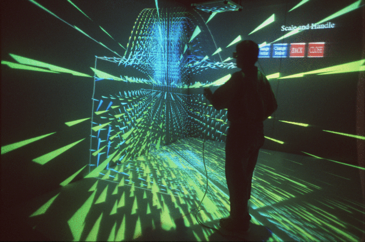

VR-CFD: Visualization and approximation of post-processed CFD data in
a virtual environment

Overview
Virtual Reality (VR) provides a fully interactive three dimensional
interface in which users can interact with computer generated models. This
application is a virtual reality environment for examining the results
of computational fluid dynamics analysis and has been titled VR-CFD. This
tool has several features for the visualization of CFD data. Some of these
features include:
-
Streamlines and rakes
-
Cutting planes
-
Isosurfaces
-
Vector fields
-
Mixing of two particle streams
-
Particle animation along the streamlines
-
Sweeping cutting planes
-
Isolation of "areas of interest".
Several other techniques have been implemented to increase the "user-friendliness"
of the application. The application's "vision" is to facilitate greater
interaction, intelligent exploration and an in-depth understanding of the
data.
In an effort to extend the functionality of VR-CFD beyond its use as
a post pro-cessing tool to that of a design tool, CFD approximation techniques
have been investigated and approximation functionality has been added to
this tool. Two approximation techniques are used to approximate and visualize
the change in the flow characteristics of fluids as changes are made
to the model geometry. Users may interactively apply these approximation
techniques on post processed computational fluid dynamics (CFD) data in
a virtual environment. The virtual knot technique of B-spline curve fitting
(Hsieh and Chang, 1994) is used here along with common linear interpolation.
Users are allowed to select either method of approximation, parameters
for which the response surface needs to be generated. and methods of comparison.
Numerical analysis is also performed, to compare the accuracy of the approximations
to the actual solutions. The results indicate that either approach would
be satisfactory for implementation in a virtual environment, however, the
accuracy of the approximations is closely related to the number and spacing
of the actual solutions which are available and the complexity of the flow
field. For greater interactive ability, methods of parallel programming
are implemented, to maintain interactive features during calculations which
are detrimental to the immersive capability of the application.
Additional media
-
Visualization and immersion in a vector field - Vector Field
(250 KB)
-
Comparison of two isosurfaces for different values of a duct angle - Isosurfaces
(40
KB)
-
Streamlines - Streamlines
(409 KB)
-
Color-mapped cutting plane - Cutting Plane
(26 KB)
-
Another color-mapped cutting plane - Cutting Plane
(24 KB)
-
Full field velocity vectors - Vectors
(68 KB)
-
Menu and rake of streamlines - Rake
(31 KB)
Hardware and Software
- Software: OpenGL, Visualization Tool-Kit (VTK), and the C2 libraries.
- Hardware: The C2 virtual environment, n-vision helmet, and the desktop
monitor in stereo with 3D interaction.
Publications
- Shahnawaz, V., Vance, J., and Kutti, S., Visualization
of Post-Processed CFD Data in a Virtual Environment, 1999 ASME
Design Engineering Technical Conference, Sept 12-15,1999, Las Vegas, Nevada, DETC/CIE 9042.
- Shahnawaz, Vishant, Visualization and approximation analysis of post processed computational fluid dynamics data in a virtual environment, M.S. Thesis, Iowa State Univeristy, 2000
Personnel
- Vishant Shahnawaz, Research Assistant, Virtual Reality Application
Center, Iowa State University
- Judy Vance, Associate
Professor, Dept. of Mechanical Engineering, Iowa State University
Funding
Facilities
Mechanical Engineering | VRAC | ISU |
Home | E-mail | Previous
{kind=link}
{kind=link}
{kind=link}
{kind=link}
{kind=link}
{kind=link}
{kind=link}